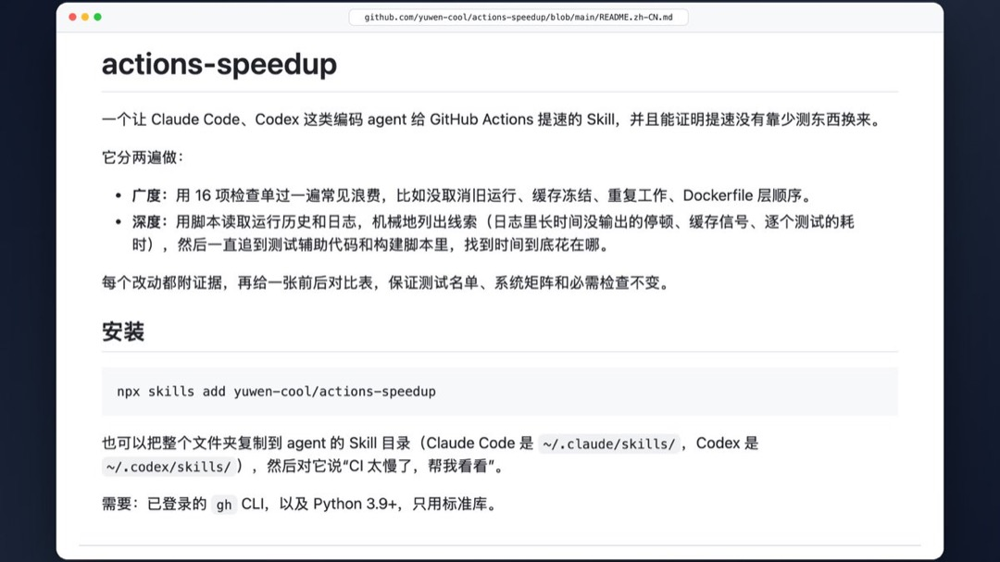
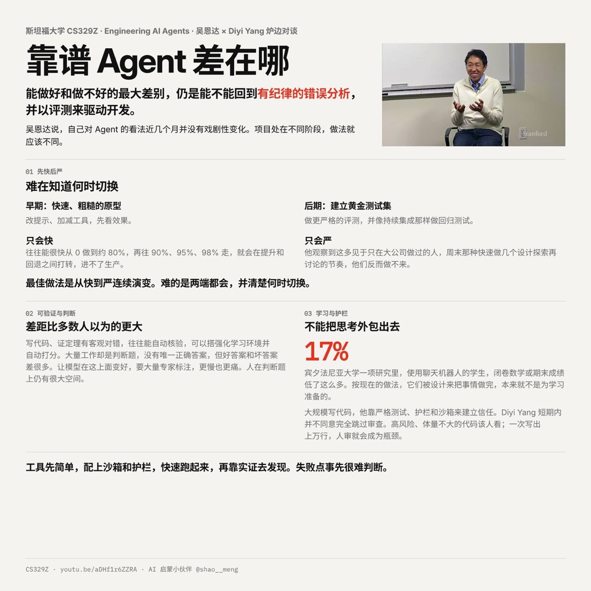
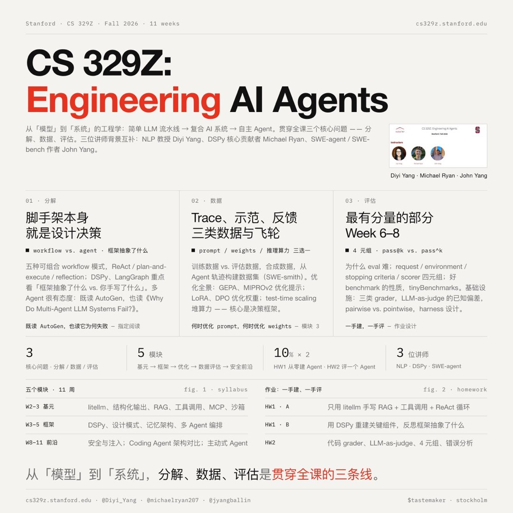

本期速览
01 Hugging Face 开源多智能体强化学习教程
03 actions-speedup 将 CI 从 35 分钟压到 9 分钟
04 吴恩达谈 Agent 评测与错误分析纪律
01｜Hugging Face 开源多智能体强化学习教程
来源（X） · @Xudong07452910 · 2026-11-28 08:45
任务很简单，4 个 Agent 各拿到一个只有自己知道的数字，共用一个 Qwen3-0.6B，但各有各的上下文。它们可以互发消息，只要有一个交出完整、排对的数字列表，全队就得分。排错是 0 分；排对了，用的 token 越多，奖励扣得越多。
整个流程可以拆成三步：
① 先跑评测：直接测没训练过的底模，看看四个 Agent 能配合到什么程度。这个成绩就是后面要对照的起点。
② 在 RL 环境里练：同一道题让团队独立试 8 次。TRL 比较这 8 次的奖励，给表现更好的那一队更多正向训练信号。队里四个 Agent 共用这一信号，更新的是同一份模型。教程默认跑 50 步。
③ 训完再测：用训练前测过的同一批 192 道留出题，看看成功率有没有变。训练日志还可以看每队用了多少 token、发了多少条消息。
原文给了完整脚本。想照跑的话，先建个 Hugging Face Bucket 存结果，再用 HF Jobs 启动双卡任务：一张卡负责让 Agent 跑任务，另一张卡负责更新模型，两张 H200 大约 5 小时。
50 美元这版是缩短跑法，只训 50 轮，TRL 自己跑大概到 60.9%。想接近原实验，就把轮数和 rollout 调大。
对 agent RL 好奇、想动手跑通一个完整闭环的朋友，推荐收藏，照着做一遍收获会很大。
📎 https://huggingface.co/blog/training-swarms
02｜Keel Skill 为编码 Agent 治理架构边界
来源（X） · @lencx_ · 2026-11-28 09:18
如果你认为以上 Prompt 有帮助，可以试试我写的 Keel Skill。
https://github.com/lencx/skills
Keel 是一个给编码 Agent 用的架构 Skill，可以做架构决策、评审已有方案和治理长期演进中的边界漂移。遇到模块职责、接口契约、依赖方向或状态归属的问题，Keel 会先明确谁负责、谁能拍板、按什么标准判断，再找可能改变结论的证据。影响小、容易撤回的选择，简短比较就够。涉及公开接口或持久化数据时，就把兼容、迁移和恢复的条件说清楚。
03｜actions-speedup 将 CI 从 35 分钟压到 9 分钟
来源（X） · @gkxspace · 2026-11-27 19:14
参考 HiTw93、Owen 等大佬的思路，搓了个Skill，刚把我项目的 CI 从 30-35 分钟干到了 6-9 分钟！！！
它会自动抓日志、清常见浪费，顺着最慢的步骤挖进测试和构建代码里找原因，改完还给你出前后对比表
🔗：https://github.com/yuwen-cool/actions-speedup

04｜吴恩达谈 Agent 评测与错误分析纪律
来源（X） · @shao__meng · 2026-11-28 09:58
斯坦福大学 CS329Z「Engineering AI Agents」的一期炉边对谈中， @Diyi_Yang 和 @AndrewYNg 两位老师谈怎样把 Agent 工作流做可靠。吴恩达老师说，自己对 Agent 的看法近几个月并没有戏剧性变化。能做好这类工作流的团队和做不好的，最大差别仍是：能不能回到有纪律的错误分析，并以评测来驱动开发。
Youtube 视频：
https://www.youtube.com/watch?v=aDHf1r6ZZRA
# 先快后严，难在知道何时切换
项目处在不同阶段，做法就应该不同。
1. 早期应该做快速、粗糙的原型：改提示、加减工具，先看效果。
2. 后期应该建立黄金测试集，做更严格的评测，并像持续集成那样做回归测试。
最佳做法是从快到严连续演变。他看到两类失误：
1. 有的团队只会快速试，往往能很快从 0 做到约 80% 准确率，但继续堆提示、加减工具后，就会在提升和回退之间打转，进不了生产。再往 90%、95%、98% 走，得靠更慢、更严的流程。
2. 有的人只会过度严谨的流程，他观察到这多见于只在大公司做过的人，周末那种快速做几个设计探索再讨论的节奏，他们反而做不来。
难的是两端都会，并清楚何时切换。传统软件大体可按规格预料；AI 系统多了一层不确定性，有时正确的一步是先搭粗糙的 Agent Harness，看它在哪里失败再改进。失败点事先很难判断，他的建议是：工具先简单，配上沙箱和护栏，快速跑起来，再靠实证去发现。
# 可验证任务和判断题的差距，比多数人以为的更大
Diyi Yang 老师问到人还剩什么优势。吴恩达老师说，智力是参差的，模型在可验证任务和判断题上的差距，比多数人意识到的更大。写代码、证定理这类有客观对错、往往能自动核验的任务，可以搭强化学习环境并自动打分。大量工作却是判断题，没有唯一正确答案，但好答案和坏答案差很多。他举了这些例子：
1. 一个系统该用什么架构。
2. 一长串产品功能里，先做哪一项。
3. 用什么营销口号，先进入哪个国家，面向哪个年龄层。
4. 要不要现在就聘请销售副总裁，还是再等六个月。
让模型在判断题上变好并非做不到，但要大量专家标注，过程更慢也更痛。评测也更容易落在可验证任务上，社会又容易把 IBM Watson、AlphaGo、Deep Blue 这类突破过度外推。人在判断题上仍有很大空间；STEM 教育需要更多教判断，而不能只教「什么是正确答案」。
# 学习不能靠把思考外包；大规模写代码要靠测试和护栏
Diyi Yang 指出，作业分数升高、闭卷考试却下降。吴恩达老师说，按现在的做法，AI 聊天机器人对学习很糟糕：它们被设计来把事情做完，本来就不是为学习准备的。把思考外包出去，学到的和记住的都会变少。他援引宾夕法尼亚大学一项研究：使用聊天机器人的学生，闭卷数学或期末成绩低了 17%。他担心这种损失也会在职场成年人身上累积。
谈到手写和审代码，吴恩达老师说自己几乎已经不再手写，也不再逐行审，因为生成量太大，人会变成瓶颈。他靠严格测试、护栏和沙箱来建立信任，例如只给编程智能体操作某一个工作目录的工具。智能体也曾删过生产数据、留下过测试用后门。Diyi Yang 老师短期内并不同意完全跳过审查。吴恩达老师补充：高风险、体量不大的代码当然该让人看；但当智能体一次写出上万行，而人审可能慢十倍、一百倍，人审就会成为瓶颈。

引用内容
meng shao @shao__meng
Stanford / Fall 2026 @stanfordnlp
https://cs329z.stanford.edu/
课程定位：从"模型"到"系统"的工程学
覆盖：简单 LLM 流水线 → 复合 AI 系统 → 自主 Agent。三位讲师的背景也高度互补：
@Diyi_Yang（斯坦福 NLP 教授，人机交互与社会计算方向）
@michaelryan207（DSPy 核心贡献者，自动评估 AutoMetrics 作者）
@jyangballin（SWE-agent / SWE-bench / SWE-smith 作者，软件工程 Agent 领域最重要的研究者之一）
# 课程主线：三大工程挑战
贯穿全课的三个核心问题——分解（decomposition）、数据（data）、评估（evaluation）。11 周的内容基本围绕这三条线展开，可以分为五个模块：
模块 1：构建基元（Week 2–3）
· LLM 作为构建材料：API/SDK（litellm）、结构化输出、约束生成、解码策略、test-time compute、上下文工程、模型选型与成本/延迟权衡
· RAG：embedding、向量库、分块策略、混合检索、cross-encoder 与 ColBERT 后期交互
· 工具调用：函数调用 API、MCP（Model Context Protocol）、工具设计、代码沙箱、错误处理与重试
模块 2：框架与设计模式（Week 3–5）
· 框架层：DSPy（signature / module / optimizer）、LangChain/LangGraph、LlamaIndex，重点是"框架抽象了什么 vs. 你手写了什么"
· 设计模式：workflow vs. agent 的分类学，五种可组合 workflow 模式，ReAct / plan-and-execute / reflection，"scaffold（脚手架）本身就是设计决策"
· 记忆架构：短期/长期记忆、记忆作为工具动作、文件系统作为外化记忆、跨 Agent 记忆（MemGPT、Mem0、Generative Agents）
· 多 Agent 系统：编排模式、handoff 与状态传递，以及一个很有态度的对照阅读——既读 AutoGen，也读《Why Do Multi-Agent LLM Systems Fail?》和 Neubig 的《Don't Sleep on Single-agent Systems》
模块 3：优化（Week 5）
· 从提示词到微调的全景：GEPA、MIPROv2、OPRO、TextGrad（提示优化）；LoRA/QLoRA、蒸馏、RLHF/DPO（权重优化）；test-time scaling（推理算力）
· 核心问题是决策框架：什么时候优化 prompt、什么时候优化 weights、什么时候堆推理算力
模块 4：数据与评估（Week 6–8）——最有分量的部分
· 数据：trace、demonstration、feedback 三类数据；训练数据 vs. 评估数据；数据飞轮；合成数据；从 Agent 轨迹构建数据集（SWE-smith）
· 评估基础：为什么 eval 难；4 元组框架（request / environment / stopping criteria / scorer）；好 benchmark 的性质；tinyBenchmarks
· 评估基础设施：三类 grader、LLM-as-judge 的 prompt 设计与已知偏差、pairwise vs. pointwise、非确定性指标 pass@k vs. pass^k、harness 设计
模块 5：安全与前沿（Week 8–11）
· 安全：工具访问的隐私风险、prompt injection（含间接注入）、红队、沙箱与权限模型、输出护栏、human-in-the-loop
· Coding Agent：SWE-agent、Claude Code、OpenHands 的端到端架构对比
· 主动式 Agent：从 reactive 到 proactive，General User Models（GUM）、Next Action Prediction，以及"Agent 何时应主动、何时应等待"的 mixed-initiative 问题
· 开放问题：多模态/web/计算机使用 Agent、科学 Agent、长时运行架构、生产可观测性（tracing、monitoring、成本管理）
# 作业设计：一手建、一手评
HW1：从零构建 Agent 系统（10%） 给定论文库，构建能检索并推理回答科学问题的 Agent。
· Part A：只用 litellm 手写 RAG + 工具调用 + ReAct 式 Agent 循环
· Part B：用 DSPy 重建关键组件，并反思框架抽象了什么
HW2：评估一个 Agent（10%） 给定一个预构建 Agent，设计完整评估套件：代码型 grader、至少一个 LLM-as-judge、用 4 元组框架构建 benchmark 任务、错误分析。

05｜谷歌发布 Gemini 多智能体团队搭建指南
来源（X） · @ailiangzi · 2026-11-27 16:46
引用内容
Movez @0xMovez
中文译文
Gemini 4 Neon 是目前最好的 Google 模型，而 99% 的人只用了它 20% 的能力
通过设置正确的 harness，就能发挥出它 100% 的实力。
以团队方式设置：Neon 负责规划，Hydrogen 负责类型，一个验证器负责检查）
在这篇文章中，我用 8 个步骤向你展示如何做到：https://x.com/i/article/2125560293870669824
原文
Gemini 4 Neon is the best Google model right now, and 99% of people use it at 20% of its power
get 100% out of it by setting up the right harness.
set up as team: Neon plans, Hydrogen types, a verifier checks)
in this article, I show you how in 8 steps: https://x.com/i/article/2125560293870669824